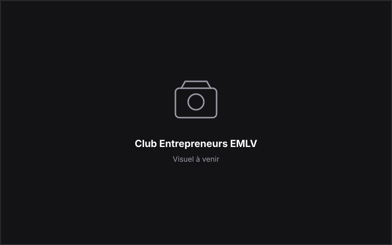

Communication
Club Entrepreneurs EMLV
Chargé de communication
Création de contenus et animation de la communication digitale du club.
Le club
Association étudiante de l'EMLV dédiée à l'entrepreneuriat. Présentation détaillée à compléter.
Mon rôle
Chargé de communication : gestion des contenus digitaux, création de posts, animation de la communication du club et coordination avec l'équipe.
Communication digitale
Créations
Les créations réalisées pour le club (publications, affiches, visuels) seront présentées ici dès qu'elles seront disponibles.
Réseaux sociaux
Captures et éléments des réseaux sociaux du club à venir.